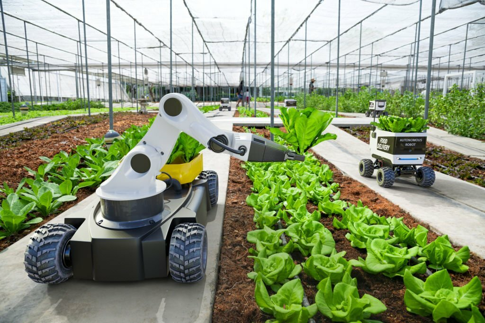
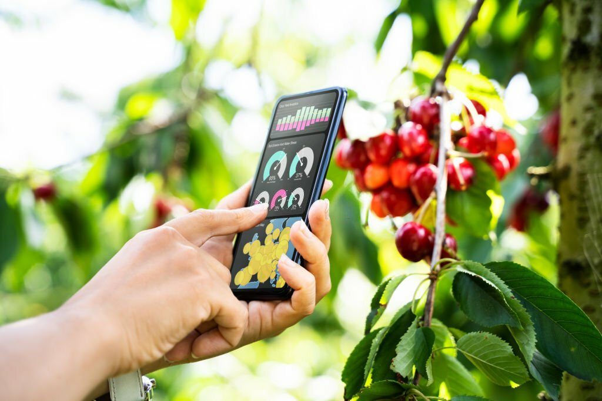
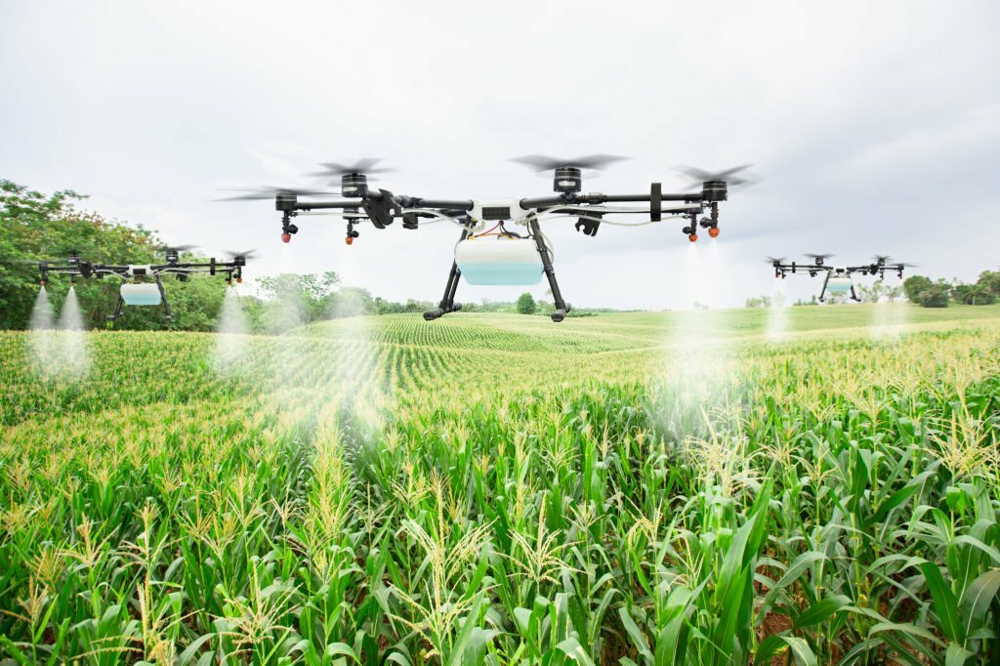

We Help You To Cultivate Your Farm
Precision agriculture, or smart farming, is the use of advanced technologies to enhance the efficiency, sustainability, and productivity of agricultural practices.

What Are The New Technologies That Can Be Used For Cultivation?
There are more of things that can be used for farming using new cultivation. So using those new technologies farmers can get more advantages as well they can get ore knowledge about the new technologies as well.



You can see here some technologies that need to have do this. So these are the most important resources that need tocultivate with new technology.So these are some important resources for that and there are more resources that need to cultivate with new technology.So you also can do this using these
DATA ANALYTICS AND FARM MANAGEMENT SOFTWARE
Utilize data analytics tools to analyze information collected from sensors and other sources.Farm management software can help farmers make data-driven decisions regarding planting, harvesting, and resource allocation.
DRONES AND REMOTE SENSING
Drones equipped with cameras and sensors can provide high-resolution aerial imagery for crop monitoring.Sensing technologies can help assess crop health, detect diseases, and optimize resource usage.
PRECISION PLANTING
Use GPS-guided equipment for precise planting, resulting in optimal spacing and depth for seeds.Implement variable rate technology to adjust planting density and input application based on specific areas of the field.
VERTICAL FARMING AND CONTROLLED ENVIRONMENT AGRICULTURE
Explore the concept of vertical farming, where crops are grown in vertically stacked layers, often indoors. Controlled environment agriculture involves creating ideal conditions for plant growth, including temperature, humidity, and light control.